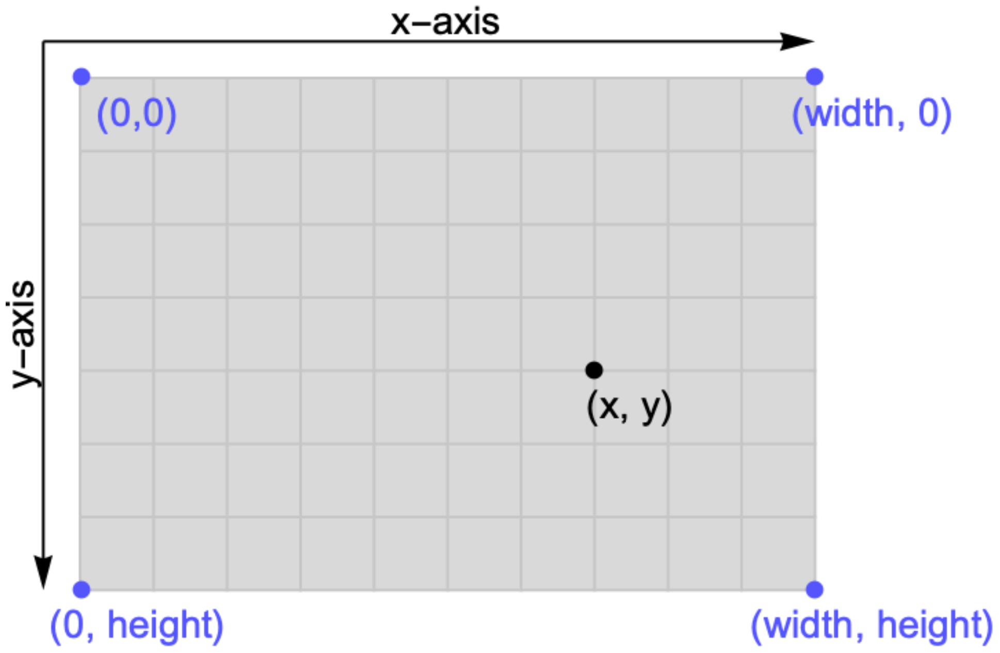
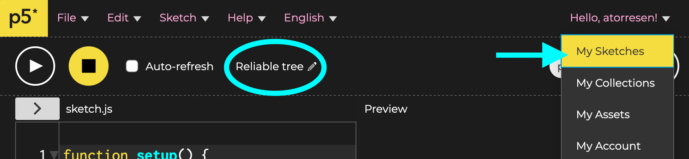
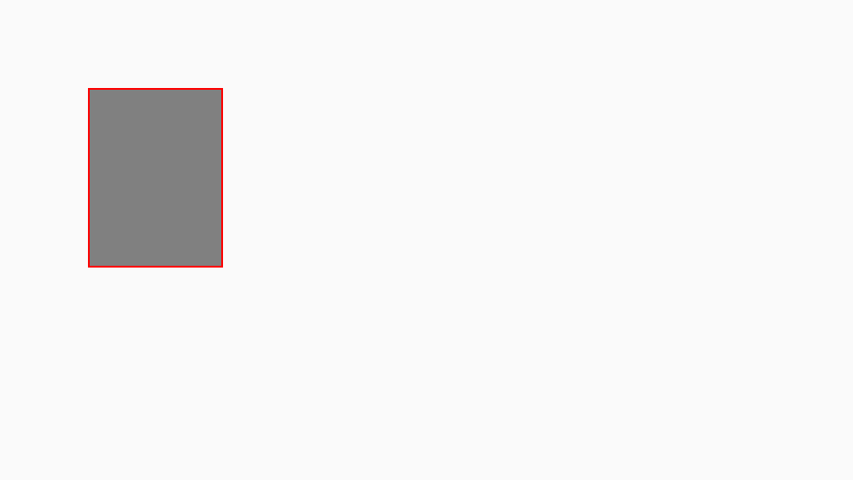
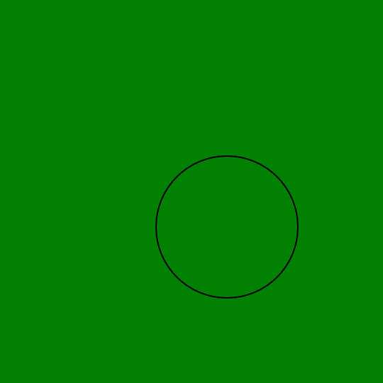
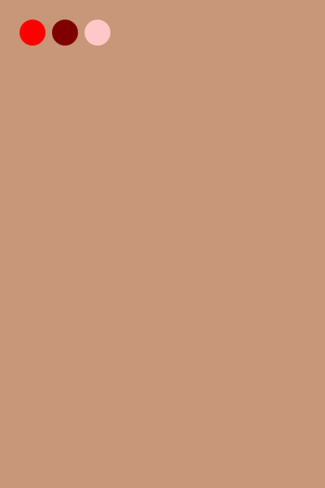
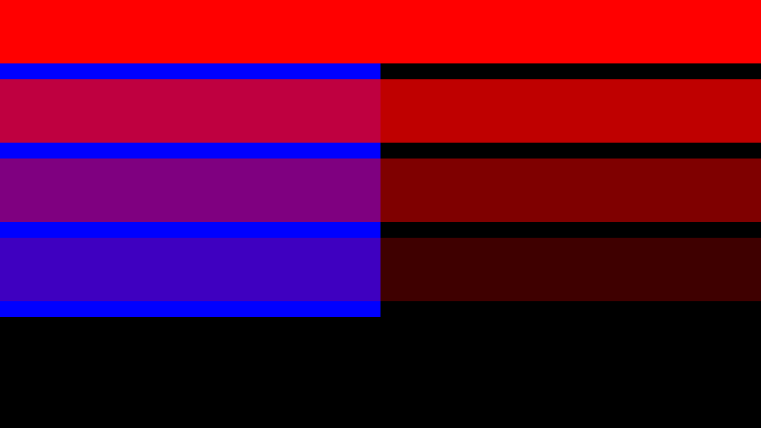

Experiment: Change some of the numbers in the code, then run it again and see what happens.
Exercise: Make your canvas 500 pixels wide and 400 pixels tall and turn the background of your canvas into a pretty color. (Hint: the p5.js Reference pages might be useful.)
Basics of p5.js
p5.js is a library of functions for creative coding in the JavaScript coding language, developed by Lauren Lee McCarthy (a RISD alum).
Functions
A function is code that performs a set of instructions based on given input(s). The inputs to a function are also called arguments. The syntax for calling a function with 2 arguments in p5.js looks like this:
functionName(argument1, argument2);
Functions package up code so it can be used over and over again in many different scenarios. For example, instead of writing a lot of code to create a circle point by point, you can simply use the pre-written circle() function.
How do you know what functions are available? How do you know how many arguments a function has or what the arguments mean?
Documentation!! p5.js Reference pages
Coordinates
By default in p5.js, the coordinate grid puts (0, 0) at the top left corner of the canvas.
The horizontal x-axis numbers increase from left to right.
The vertical y-axis numbers increase from top to bottom.

Exercise: Draw a red circle in the center of the canvas.
Saving Sketches
To save your sketches, create a free p5.js account.
Go to editor.p5js.org and click Sign Up in the top right corner.
Make an account and complete email verification if necessary.
Save sketches via File>Save or Cmd+S. Click the file name to rename the sketch. You can access saved sketches in the top right corner, under "My Sketches."

Sketching Exercises
Recreate the following five images with p5.js. Approximations are ok (i.e., the dimensions don't have to be exactly the same). Save each as a new sketch under "My Sketches" in the p5.js web editor.
sketch_1

sketch_2

sketch_3

sketch_4

sketch_5
If/when you get stuck, refer to the p5.js reference pages, ask classmates for help, or watch the following Coding Train video tutorials:
There are many equally-correct ways to create any of the drawings. If you are working with your classmates, see if you can each come up with different code that returns drawings that look the same. After you have attempted each sketch yourself, you can see my solutions here.
setup() and draw()
The setup() and draw() functions create the canvas that we see on the right of the p5.js editor.
When you run the code, setup() runs once and draw() loops continuously.
Variables and random() Values
A variable is a named container that stores a value. It is best practice to give your variables descriptive names.
Variables have different scope depending on where in the code they are introduced, or “declared.” Global variables – declared outside of any functions – can be used throughout the code. Local variables – declared inside a function – can only be used in the function in which it is declared.
Declare a variable using the key word let. Assign a value to the variable using =.
let r = 100;
// or (text after two forward slashes becomes a comment)
let r;
r = 100;
Exercise: Create three global variables – r, g, and b – to define the RGB values of the canvas background color.
The random() function returns a random value between an upper and lower limit, passed in as arguments:
// get a random number between 0 and 255
let r = random(0, 255);
Exercise: Use random() to give the background a new random color each time you run the code.
p5.js in HTML
The p5.js editor is a convenient tool for coding right in your browser, but you may also want to embed p5.js graphics in your own custom HTML webpages. Here is how to do that:
In your webpage project folder, create a new file named sketch.js. This is a JavaScript file that will hold your p5.js code.
Add the following script tags to you html file. The first one links to the p5.js code library, adn the second links to your new local sketch.js file:
Create an empty div where you want your sketch to go in your HTML file, and give it an id, like this:
<div id="mySketch"></div>
In your sketch.js file, paste in the code for your p5.js sketch.
Then, we need to make two changes in the setup() function to make your sketch show up in your html page:
define a variable to hold your canvas
set your "mySketch" div to be a "parent" container that holds the canvas
That looks like this:
function setup() { // define a variable to hold your canvas
var myCanvas = createCanvas(400, 400);
... // place your canvas inside the parent div with id="mySketch"
myCanvas.parent("mySketch");
}
function draw() { // your sketch code
}
Save all of your files. When you open your html file in your browser, you should see your sketch!